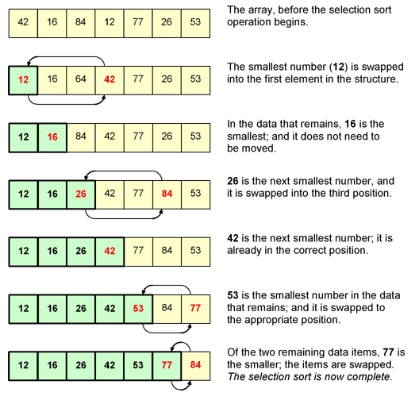

Selection Sort Algorithm

The selection sort algorithm sorts an array by repeatedly finding the minimum element (considering ascending order) from unsorted part and putting it at the beginning.
The algorithm maintains two subarrays in a given array.
1) The subarray which is already sorted.
2) Remaining subarray which is unsorted.
In every iteration of selection sort, the minimum element (considering ascending order) from the unsorted subarray is picked and moved to the sorted subarray.
Performance :
Among simple average-case Θ(n2) algorithms, selection sort almost always outperforms bubble sort and gnome sort. Insertion sort is very similar in that after the kth iteration, the first k elements in the array are in sorted order. Insertion sort's advantage is that it only scans as many elements as it needs in order to place the k + 1st element, while selection sort must scan all remaining elements to find the k + 1st element. Simple calculation shows that insertion sort will therefore usually perform about half as many comparisons as selection sort, although it can perform just as many or far fewer depending on the order the array was in prior to sorting. It can be seen as an advantage for some real-time applications that selection sort will perform identically regardless of the order of the array, while insertion sort's running time can vary considerably. However, this is more often an advantage for insertion sort in that it runs much more efficiently if the array is already sorted or "close to sorted." While selection sort is preferable to insertion sort in terms of number of writes (Θ(n) swaps versus Ο(n2) swaps), it almost always far exceeds (and never beats) the number of writes that cycle sort makes, as cycle sort is theoretically optimal in the number of writes. This can be important if writes are significantly more expensive than reads, such as with EEPROM or Flash memory, where every write lessens the lifespan of the memory. Finally, selection sort is greatly outperformed on larger arrays by Θ(n log n) divide-and-conquer algorithms such as mergesort. However, insertion sort or selection sort are both typically faster for small arrays (i.e. fewer than 10–20 elements). A useful optimization in practice for the recursive algorithms is to switch to insertion sort or selection sort for "small enough" sublists.
Example :
Working :
In Selection Sort algorithm the array is traversed to find the minimum of the elements and is swapped with the element at the index 0. In the next iteration the element at index 1 is replaced by the next minimum element available. This is repeated till the array is completely sorted
Example :
Sorting an Array with elements [64, 25, 12, 22, 11]
array[] = 64 25 12 22 11 // Find the minimum element in arr[0...4] // and place it at beginning 11 25 12 22 64 // Find the minimum element in arr[1...4] // and place it at beginning of arr[1...4] 11 12 25 22 64 // Find the minimum element in arr[2...4] // and place it at beginning of arr[2...4] 11 12 22 25 64 // Find the minimum element in arr[3...4] // and place it at beginning of arr[3...4] 11 12 22 25 64
Pseudo Code :
procedure selection sort
list : array of items
n : size of list
for i = 1 to n - 1
/* set current element as minimum*/
min = i
/* check the element to be minimum */
for j = i+1 to n
if list[j] < list[min] then
min = j;
end if
end for
/* swap the minimum element with the current element*/
if indexMin != i then
swap list[min] and list[i]
end if
end for
end procedure
Time Complexity: O(n^2) as there are two nested loops.
Auxiliary Space: O(1)
The good thing about selection sort is it never makes more than O(n) swaps and can be useful when memory write is a costly operation.
Sorting In Place: Yes, it does not require extra space.
Stable: No
The algorithm divides the input list into two parts: the sublist of items already sorted, which is built up from left to right at the front (left) of the list, and the sublist of items remaining to be sorted that occupy the rest of the list. Initially, the sorted sublist is empty and the unsorted sublist is the entire input list. The algorithm proceeds by finding the smallest (or largest, depending on sorting order) element in the unsorted sublist, exchanging (swapping) it with the leftmost unsorted element (putting it in sorted order), and moving the sublist boundaries one element to the right.